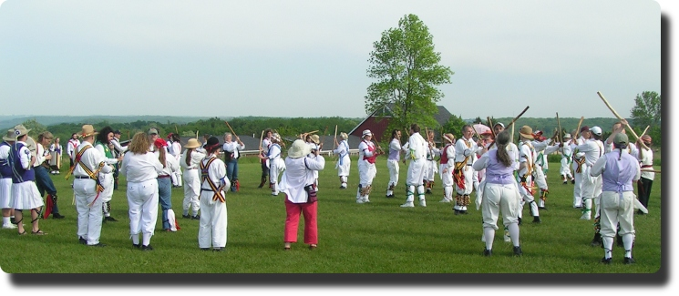

|  | |
|
Mass Dance at the 2006 MWMA,
|
Photo by Robin Smith
|
Here's some links to Morris dances that we've collected over the years. It has been a number of years since it has been updated or maintained, so some of the links may no longer work.
| Dance | Tradition | Music | Video | Instructions | Notes |
|---|---|---|---|---|---|
| 17th of May | Adderbury | 17th of May | click to play video | click to view instruction | |
| Abram Circle Dance | Abram | The Circle Dance from Abram | click to play video | click to view instruction | a.k.a. THE Abrams Circle Dance, Circle Dance in the Abram tradition, et.al. |
| Abram Circle Dance - 2013 | Abram | The Circle Dance from Abram | click to play video | click to view instruction | 2013 & 2016 Ale Edition |
| Admiral's Bombast | Lexington-in-the-Bluegrass | The Ruler of the Queen's Navy | click to play video | click to view instruction | hanky dance |
| Banks of the Dee | Fieldtown | Banks of the Dee | click to play video | click to view instruction | hankie dance |
| Bean Setting | Badby | Bean Setting | click to play video | click to view instruction | |
| Black Joke | Lexington-in-the-Bluegrass | Black Joke | click to view instruction | stick dance | |
| Black Joke | Tadmarton | Black Joke | click to view instruction | Stick dance | |
| Blue Eyed Stranger | Headington | Blue-Eyed Stranger | click to play video | click to view instruction | |
| Blue Eyed Stranger | Tadmarton | Blue Eyed Stranger | click to view instruction | Handkerchief Dance for 6 | |
| Bonny Green Garters | Bampton | Bonny Green Garters | click to view instruction | hankie dance | |
| Bonny Green Garters - 2016 | Bampton | Bonny Green Garters | click to play video | click to view instruction | 2016 Edition |
| Buffoon | Tadmarton | Buffoon | click to view instruction | Corner Dance / Handkerchief Dance for 6 | |
| Chuck and Di | Ascot Under Wychwood | Balance the Straw and Beethoven's 9th | click to play video | ||
| Cobb's Horse | Adderbury | Cobb's Horse | click to play video | ||
| Constant Billy | Tadmarton | Constant Billy | click to view instruction | 2 Stick dance | |
| Cuckoo's Nest | Border | Cuckoo's Nest | click to play video | click to view instruction | |
| Cuckoo's Nest | Adderbury | Cuckoo's Nest | click to view instruction | stick dance | |
| Cuckoo's Nest | Bledington | Cuckoo's Nest | |||
| Cuckoo's Nest - 2016 | Bledington | Cuckoo's Nest | click to play video | click to view instruction | 2016 Edition |
| Curly Headed Ploughboy | Fieldtown | Curly Headed Ploughboy | click to play video | ||
| Dearest Dicky | Fieldtown | Dearest Dicky | |||
| Donkey Riding | Bleddington | Donkey Riding | |||
| Fat Albert | Lexington-in-the-Bluegrass | The Home Ruler | click to view instruction | hankie dance | |
| Four Musketeers | Lexington-in-the-Bluegrass | La Marseillaise | click to view instruction | stick dance | |
| Funked-(Up)-ton on Severn | Upton-on-Severn | Upton on Severn | click to view instruction | stick dance, Upton-on-Severn-by-way-of Australia | |
| General Monk's March | Bleddington | General Monk's March | click to view instruction | hankie dance | |
| Hands Across the Pond | Lexington-in-the-Bluegrass | Hands Across the Pond | click to view instruction | hankie dance | |
| Highland Mary | Bampton | Highland Mary | click to play video | click to view instruction | hankie dance |
| Hook, Line, and Sinker | Lexington-in-the-Bluegrass | Hook, Line, and Sinker | click to view instruction | hankie dance | |
| Jenny Lind | Bampton | Jenny Lind | click to view instruction | ||
| Jockey to the Fair | Fieldtown | Jockey to the Fair | click to play video | ||
| Jolly Wagoner | Tadmarton | Jolly Wagoner (?) | click to view instruction | Handkerchief Dance for 6 | |
| Lad's A Bunchum | Adderbury | Lad's A Bunchum | click to play video | click to view instruction | |
| Lad's A Bunchum - 2016 | Adderbury | Lad's A Bunchum | click to play video | click to view instruction | 2016 Edition |
| Little Willie | Lexington-in-the-Bluegrass | Constant Billy | click to play video | click to view instruction | stick dance |
| Oak Apple Day | Headington | Headington Twenty Ninth of May | click to play video | click to view instruction | |
| Old Shoe | Lexington-in-the-Bluegrass | Brighton Campy | click to view instruction | hanky dance | |
| Piper's Hut | Fieldtown | Burning of the Piper's Hut | click to play video | click to view instruction | This dance was designed to be danced along with the Border version of PIper's Hut written by Breathless in Berthoud Border Morris |
| Piper's Hut | Border | Burning of the Piper's Hut | click to play video | click to view instruction | This dance was designed to be danced along with the Fieildtown version of PIper's Hut written by Maroon Bells Morris |
| Pirate Dogs | Lexington-in-the-Bluegrass | The Pirate King | click to view instruction | stick dance | |
| Postman's Knock | Adderbury | Postman's Knock | click to play video | ||
| Prince William | Minneapolis on Mississippi | Prince William | click to play video | click to view instruction | |
| Prince William (Ken J's Transcription) | Minneapolis on Mississippi | Prince William | click to play video | click to view instruction | |
| Prince William - 2016 | Minneapolis on Mississippi | Prince William | click to play video | click to view instruction | 2016 Edition |
| Princess Royal | Tadmarton | Princess Royal | click to view instruction | Stick dance | |
| Quaker Girl | Tadmarton | Quaker Girl | click to view instruction | Handkerchief Dance for 6 | |
| Rambling Sailor | Brackley | Rambling Sailor | click to play video | click to view instruction | The first part of the chorus music will move to the relative major. |
| Rigs of Marlow | Headington | Rigs of Marlow | click to play video | click to view instruction | short stick dance |
| Rigs of Marlow - 2016 | Headington | Rigs of Marlow | click to play video | click to view instruction | 2016 Edition |
| Rose Tree | Bampton | Rose Tree | click to view instruction | hankie dance | |
| Rum by Gum | Adderbury | Rum By Gum | click to play video | click to view instruction | |
| Sheaves of Seaweed | Lexington-in-the-Bluegrass | Sailor's Hornpipe | click to play video | click to view instruction | hanky dance |
| Shepherd's Hay | Fieldtown | Shepherd's Hay | click to play video | ||
| Shepherds Hey | Tadmarton | Shepherds Hey | click to view instruction | Handkerchief Dance for 6 | |
| Shooting | Badby | Badby Beaux of London City | click to play video | click to view instruction | Douglas approved! And now updated to include ALL the figures! |
| Simon's Fancy | Bampton | The Trim Rigged Doxie | click to play video | ||
| Skirmishes | Adderbury | Lilli Burlero | click to play video | ||
| South Australia | Adderbury | South Australia | click to play video | click to view instruction | stick dance |
| Square Hey | Lexington-in-the-Bluegrass | The Rose-ish | click to play video | click to view instruction | hankie dance |
| Step & Fetch Her | Bampton | Step & Fetch Her | click to play video | click to view instruction | |
| Step Back | Fieldtown | Old Molly Oxford | click to play video | click to view instruction | |
| Sweet Jenny Jones | Adderbury | Sweet Jenny Jones | click to play video | click to view instruction | |
| The Lollipop Man | Ascot Under Wychwood | The Lollipop Man | click to play video | ||
| The Nutting Girl | Fieldtown | The Nutting Girl | click to play video | ||
| The Rose | Fieldtown | The Rose | click to play video | ||
| Three Musketeers | Bleddington | Glorishers | click to view instruction | stick dance | |
| Trigonometry | Lexington-in-the-Bluegrass | Gavot | click to view instruction | hanky dance | |
| Trunkles | Lexington-in-the-Bluegrass | Trunkles | click to play video | click to view instruction | This is a stick dance. (Bledington music, no slows, A(Ax2Bx2C)x4 ) |
| Trunkles | Headington | Trunkles | |||
| Trunkles (Corner Dance) | Tadmarton | Trunkles | click to view instruction | Handkerchief Dance for 6 | |
| Trunkles - 2016 | Headington | Trunkles | click to play video | click to view instruction | 2016 Edition |
| Vandals of Hammerwich | Litchfield | Vandals of Hammerwich | click to play video | ||
| Waltzing Matilda | Fieldtown | Waltzing Matilda | click to play video | ||
| Waterford Fair - 1 | Fieldtown | Raggle Taggle Gypsie | click to play video | ||
| Waterford Fair - 2 | Fieldtown | Country Gardens | click to play video | click to view instruction | |
| White Rocks | Lexington-in-the-Bluegrass | White Rocks | click to view instruction | hanky dance | |
| William and Nancy | Bledington | William and Nancy | click to play video | click to view instruction | |
| Winster Processional | Winster | The Winster Processional | |||
| Young Collins | Bledington | Young Collins | click to play video | click to view instruction | |
| Young Collins - 2016 | Bledington | Young Collins | click to play video | click to view instruction | 2016 Edition |